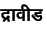
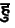

In the TEX interface, characters with any non-zero Y offset are
not correctly printed in some cases, when the PostScript font Devnac
is used.
One such case is the da-ra ligature, words
such as draaviiDa ().
(Another case is the ha-u form , see how
it is handled in the sample input file nehru.itx.)
Note that it is only in certain cases that the
word is printed incorrectly, in most cases it is handled correctly.
Usually, when the word appears near the end of the line, TEX (or
dvips, but that sounds improbable)
inserts a kern (a glue factor ?) just before the character with a
non-zero Y offset, and the word appears squashed up or pulled apart at
that point.
Have no remedy for this, only workaround is to force a line break before the
problem word, it usually sets everything right.
I have never encountered this problem when using Frans Velthuis's Devnag
font with the itrans package, therefore this problem is probably related
to the use of PostScript fonts in TEX.
If you do notice this problem with the Devnag font too, please let me
know.